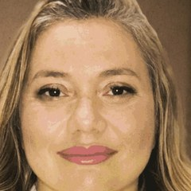

Início · Sobre
Priscilla Vasconcelos Celestino, cirurgiã plástica.
Registro CRM-BA 14567 · RQE 11087. Na Sociedade Brasileira de Cirurgia Plástica, Associado (Membro Especialista). Cada informação desta página traz a fonte.

Formação
Trajetória
- 2000Medicina na UFBA
Graduação na Faculdade de Medicina da Universidade Federal da Bahia.
Fonte: SBCP e site da clínica - 2003Residência em Cirurgia Geral
Hospital Getúlio Vargas, em Recife (PE), a base da formação cirúrgica.
Fonte: SBCP e site da clínica - 2006Trabalho apresentado
“Perfil Epidemiológico de pacientes internados por queimaduras no Hospital São Rafael”, no 2º Encontro dos Serviços Credenciados de Cirurgia Plástica N-NE.
Fonte: currículo do site da clínica - 2008Residência em Cirurgia Plástica
Hospital São Rafael, em Salvador.
Fonte: SBCP e site da clínica - 2018Clínica própria
Abre a Clínica Priscilla Celestino no Hangar Business Park.
Fonte: Receita Federal e CNES - HojeMembro Especialista da SBCP
Categoria “Associado (Membro Especialista)” na Sociedade Brasileira de Cirurgia Plástica.
Fonte: perfil oficial da SBCP
Sociedade de especialidade
Membro Especialista da SBCP

É a categoria do perfil oficial da Dra. Priscilla na SBCP, que registra a graduação na UFBA e as residências em Cirurgia Geral e em Cirurgia Plástica. No site da clínica, ela assina “Cirurgiã Plástica · CRM-BA 14567 / RQE 11087”.
Ver o perfil na SBCPHoje
Atuação
- Responsável técnica e diretora clínica da Clínica Priscilla Celestino, no Hangar Business Park · Torre 7 (CNES).
- Cirurgiã plástica no Hospital das Clínicas de Alagoinhas, segundo o currículo publicado no site da clínica (ver o arquivo).
- Cirurgia das mamas, do abdome e do contorno corporal, pós-gestação e pós-emagrecimento, e face.

Atualização
Congressos
No currículo que publicou no site da clínica, a Dra. Priscilla lista a participação nos Congressos Brasileiros de Cirurgia Plástica do 46º ao 53º (2009 a 2016), nas Jornadas Paulistas de Cirurgia Plástica de 2017 e 2018 e o trabalho “Perfil Epidemiológico de pacientes internados por queimaduras no Hospital São Rafael”, apresentado em 2006.
Fonte: página “A Clínica” do site, 2021.
Transparência
Como conferir
- Categoria na SBCP e formação: perfil oficial da SBCP.
- Registro médico: busca de médicos do CFM.
- Clínica e diretora clínica: consulta de estabelecimentos do CNES (CNES 9749977).
- Avaliações e horário da clínica: ficha do Google.
Dúvidas frequentes
Perguntas comuns
Qual é o registro da Dra. Priscilla?
CRM-BA 14567 · RQE 11087, em Cirurgia Plástica.
Onde ela fez residência em Cirurgia Plástica?
No Hospital São Rafael, em Salvador, segundo o perfil dela na SBCP e o site da clínica, que indica 2008.
Ela atende fora de Salvador?
O currículo do site da clínica cita o Hospital das Clínicas de Alagoinhas. Para consultas, fale com a recepção da clínica em Salvador.
Agende
Comece por uma conversa, na clínica.
Atendimento com hora marcada no Hangar Business Park · Torre 7, salas 414 e 415, em Salvador. A recepção combina dia e horário pelo WhatsApp (71) 98625-5253.